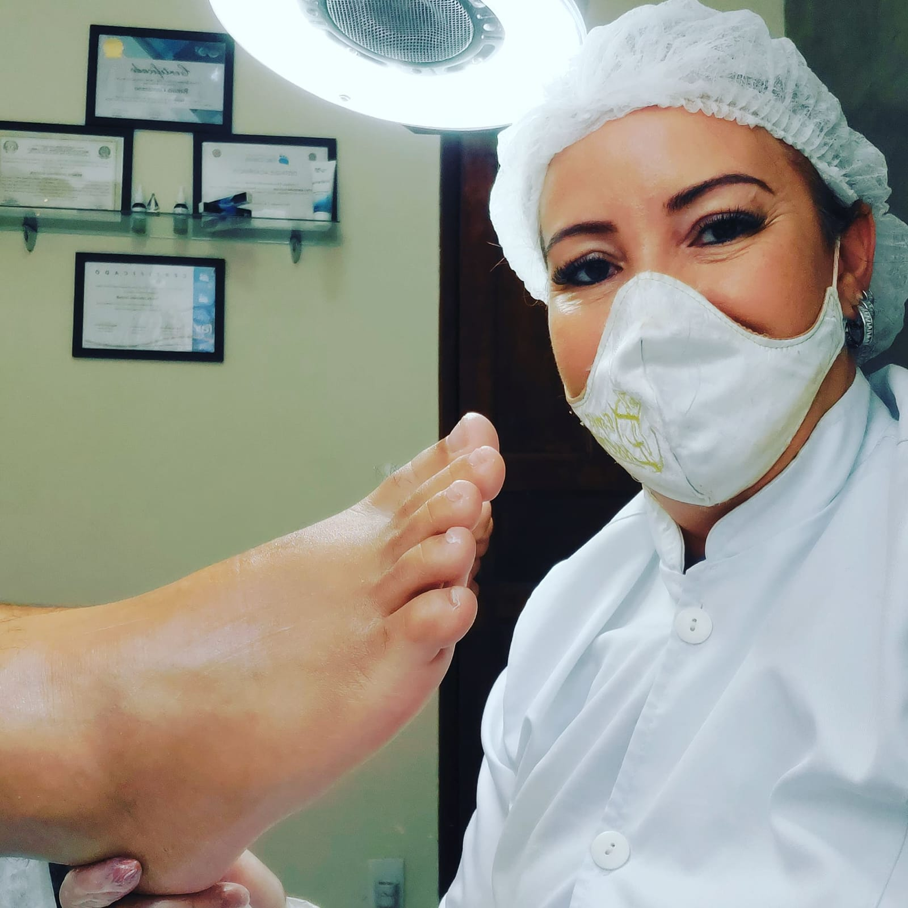

Na Cuidar Podologia, unimos técnica e acolhimento para oferecer tratamentos modernos que devolvem saúde, conforto e bem-estar para cada passo da sua vida.

Podóloga Especialista • CBO 322205
Apaixonada pela saúde dos pés, dedico minha carreira a proporcionar tratamentos que vão muito além da estética. Acredito que pés saudáveis são a base de uma vida plena e sem limitações.
Com formação técnica avançada e atualização constante, ofereço um atendimento que combina precisão clínica com o calor humano que cada paciente merece. Aqui, você é muito mais do que um número.
Oferecemos uma ampla gama de procedimentos podológicos com equipamentos modernos, materiais descartáveis e total segurança.
Tratamento cirúrgico e conservador para unhas encravadas com alívio imediato da dor e prevenção de recorrências.
Diagnóstico e tratamento especializado para infecções fúngicas nas unhas, recuperando a saúde e aparência natural.
Remoção segura de calos, calosidades e hiperqueratoses com técnicas que garantem conforto e durabilidade.
Tratamento eficaz para papiloma vírus (HPV) na planta dos pés, com protocolos modernos e alta taxa de sucesso.
Cuidados preventivos especiais para pacientes diabéticos, evitando complicações graves e promovendo qualidade de vida.
Avaliação biomecânica, palmilhas personalizadas e tratamento de lesões para atletas e praticantes de atividade física.
Massagem terapêutica nos pontos reflexos dos pés que promove relaxamento, bem-estar e equilíbrio do organismo.
lasers de baixa intensidade para fotobiomodulação, um procedimento não invasivo e indolor que estimula a regeneração celular, reduz a inflamação e acelera a cicatrização de tecidos.
eliminação de fungos através de assepsia, uso de antifúngicos tópicos (cremes/pós), controle da umidade e orientação para higiene